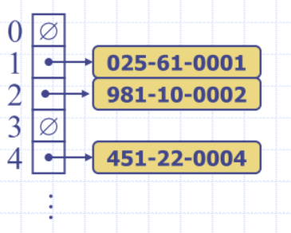
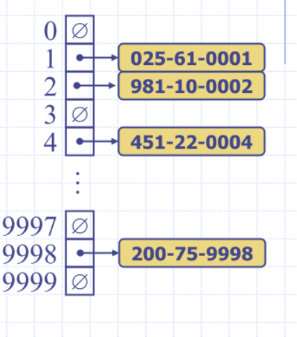
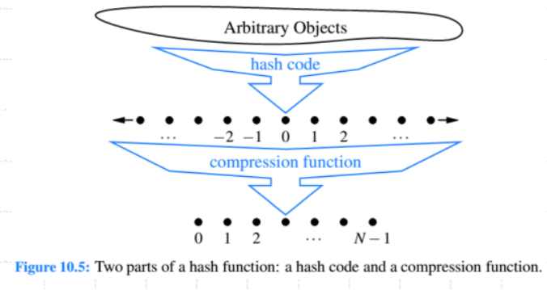
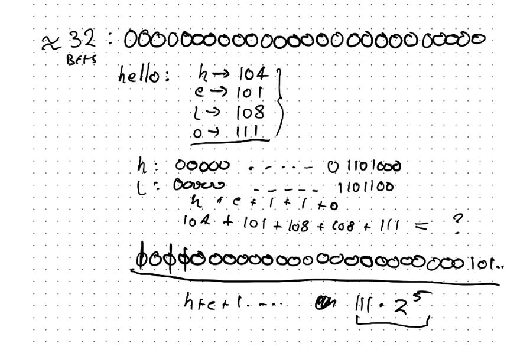
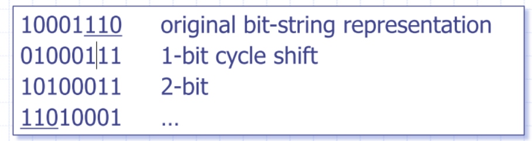
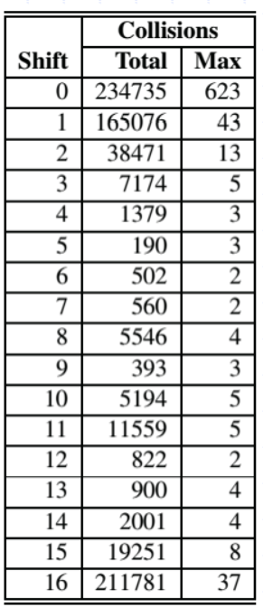
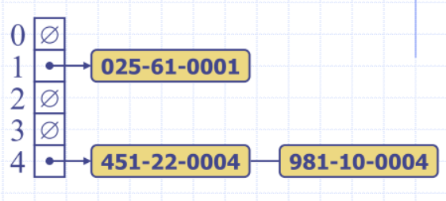
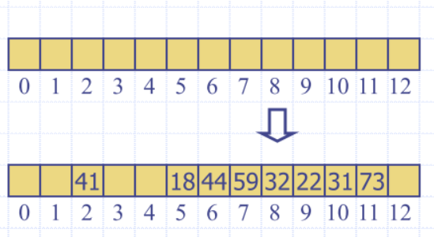
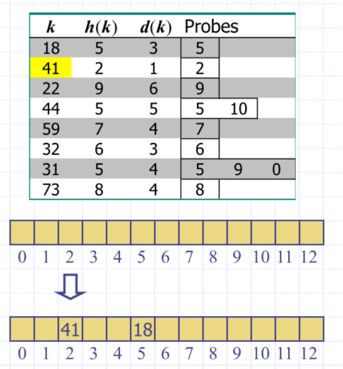
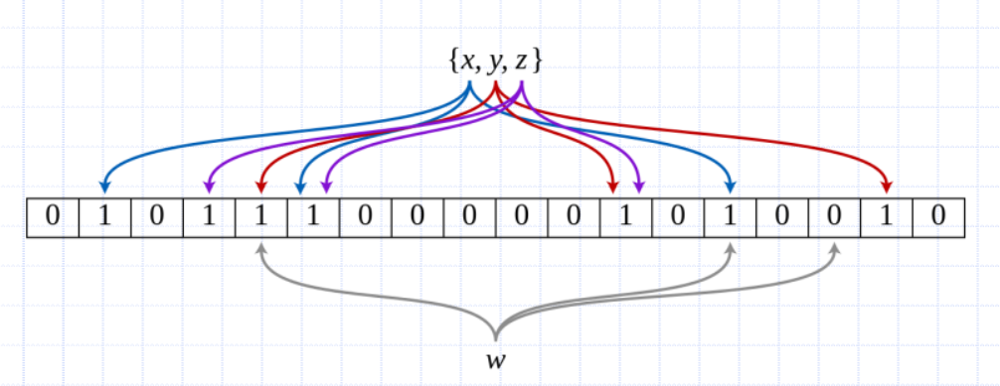

Lecture 6
Hash Table
- we care about Search, inserting and deleting items
We want:
- worst case insert, find and delete
We can have:
- efficient insertion and find operations
- do not require the items to be ordered
- do not require efficient removal of items
- Settle for in the average case
Direct Access array
Consider a setting in which a map with n items uses keys that are known to be integers in a range from 0 to N − 1
- for some N ≥ n
- Very good if key space is small (constant time insert/delete/lookup) – data is at position k
- But if we will pay extreme space overhead
- The array will be very sparse and wasteful
- e.g. if we have three items, and one of the keys was '6221' means at least 6221 length array
- But if we will pay extreme space overhead
More general types of keys
What should we do if our keys are not integers in the range from 0 to N – 1?
- Use a hash function to map general keys to corresponding indices in a table
- Hash function is a mapping:
- I have some huge span of index and I'm going to map to some smaller domain
- If u >> N, no hash function is injective
- That is, we must have collisions
h('Barry') = h('John')could occur- use a hash function to map general keys to corresponding indices in a table
- e.g. last four digits of a Tax File Number

- You can define a hash function on whatever kind of data you want
Hash functions and Hash Tables
-
Hash function h maps keys of a given type to integers in a fixed interval
[0, N - 1]- – hash function for integer keys
- Take the integer and modulo it by the hash table size. Is this a good idea?
- Potential for lots of collisions
-
Integer h(x) is called the hash value of key
-
Hash table for a given key type consists of
- hash function
- bucket array (called table) of size
-
Map implemented with a hash table
- goal is to store item
(k, o)at index
- goal is to store item
-
Hash table for a map storing entries as (TFN, Name)
- where TFN is a nine-digit positive integer
-
Hash table uses an array of size N = 10,000 and the hash function
- h(x) = last four digits of x

Hash functions
Usually specified as the composition of two functions
- Hash code
- keys integers
- Compression function
- integers
- in compression function to keey array in check

Hash codes
Component Sum: Partition the bits of the key into components of fixed length
- e.g. 16 or 32 bits
- Sum the components Example:
- “the” = h = (int) t + (int) h + (int) e
- Collisions may be common
- the = teh = eht = het = eth
Polynomial Accumulation:
- Partition the bits of the key into a sequence of components of fixed length (e.g. 8, 16 or 32 bits)
- Evaluate the polynomial at a fixed value , ignoring overflows Empirically, are reasonable.
- This is a type of “rolling” hash function – each step depends on the value of the previous step
What is the intuition?
- We are trying to spread out the influence of each “piece” of the key on the final hash code
- This means the hash code wont depend too much on any individual “piece”
- By increasing powers on each successive piece, we
ensure significant bits are set/utilized
- spread influence over the domain of bits Note: Here the “pieces” are those 8/16/32-bit quantities from the original key,

Intutition on paper
- the more randomness I can scatter throughout the bits, the better (I want to avoid collisions as best I can)
Cyclic Shift
- Variant of polynomial accumulation that replaces the multiplication with a bit shift
- Shift n bits from one side of bit pattern to the other side during the partial accumulation

def cyclic_hash(my_string):
mask = (1 << 32) – 1 # Max 32-bit int
h = 0 # the running sum of the hash value
for character in my_string:
h = (h << 5 & mask) | (h >> 27) # 5 bit shift
h += ord(character) # the integer representation of the char
return h
- idea is that we are shifting bits across
Shift collisions Example
- Each row shows the result of shifting a different number of bits
- Shows collisions for 230,000+ English words
- Total – total number of collisions
- Max – largest number of collisions that occurred for a hash code
- Which code is best?
- (For this data) - 5?

Compression Functions
Division
- size N of the hash table should be prime
- reason has to do with number theory and is beyond the scope of this course
- Basic idea: Reduce the number of common factors between hash values and
- Results in more “spread” across available buckets
Multiply, Add and Divide (MAD)
- is a prime number
- a and b are random integers in the range [0, p-1]
Recall that
- Hash table for a given key type consists of
- hash function h that maps keys of a given type to integers in a fixed interval [0, N-1]
- array (called table) of size N
- Goal is to store item (k, o) at index i = h(k)
- might get collisions
- Collisions occur when different elements are mapped to the same cell
Collision Handling
- Collisions occur when different elements are mapped to the same cell
Separate Chaining
- each cell in the table points to a linked list of entries that map there - or extensible list, etc.
- simple, but requires additional memory outside the table

Map with Separate Chaining
- Delegate operations to a list-based map at each cell
Algorithm get(k): # get is find
return A[h(k)].get(k)
Algorithm put(k, v): # put is insert
t = A[h(k)].put(k, v)
if t = null then {k is a new key}
n = n + 1
return t
Algorithm remove(k):
t = A[h(k)].remove(k)
if t != null then {k was found}
n = n - 1
return t
- Hashtable as pointer to other data structures storing stuff
- the
getis a get implementation of a linkedlist - use a hash table to find the 'bucket' of a key-value store
- iterate through the linkedList at this index, find the element and return (key,value, or both, etc.)
Linear probing
- Open addressing: colliding item is placed in a different cell of the table
- Linear probing: handles collisions by placing the colliding item in the next (circularly) available table cell
- Each table cell inspected is referred to as a “probe”
- Colliding items lump together
- causing future collisions to cause a longer sequence of probes
Insert keys 18, 41, 22, 44, 59, 32, 31, 73, in this order

- When you delete an item, cannot make it empty
- empty implies there are hash is free, but elements could have been appending further on in the list
- append a placeholder value that will never show up in the list
put(k, o)
- throw an exception if the table is full
- start at cell h(k)
- probe consecutive cells until one of the following occurs
- cell i is found that is either empty, or
- N cells have been unsuccessfully probed
- store (k, o) in cell i
Quadratic Probing
- Probe index calculated by quadratic function
- where for
- Guaranteed to find an empty slot if
- table size is prime
- table is less than half full
- This is because the quadratic probing sequence must visit at least half of the table indexes before repeating if the size of the table is prime
- How densely filled is the table?
Double hashing
Secondary hash function handles collisions by placing an item in the first available cell of the series for
Consider a hash table storing integer keys that handles collision with double hashing E.g.

Hashing performance
- O(1) – expected running time of all Map operations
- O(n) – worst case for searches, insertions and removals
- occurs when all keys inserted into the map collide
Load factor affects performance of a hash table
- Expected number of probes for an insertion with open addressing is
- So what might be a reasonable load factor?
Load Factors
- Separate Chaining: = 0.8 to 1.0 acceptable
- If = 1, one element per list
- Low space overhead; a good hash function will give us on average elements per linked list
- Note that load can be arbitrarily large (chains approach infinite length as approaches infinity)
- Linear Probing: Depends on the type, but typically < 2/3 is desired
- Python’s own open addressing uses 2/3
- State-of-art mechanisms can do well even with > 0.9
- Can > 1.0 ?
Fun with Hashing
- We can use hashing to implement structures
other than maps
- Bloom Filters – fast member testing
- Want collision free hashes?
- Perfect hash functions
- Want less probing (and, worst-case constant time lookups)?
- Cuckoo hashing
Bloom Filters
-
Sometimes we might want to answer questions like “is the key k in my set S or not” (think duplication detection for example)
-
Idea: We will build a structure that can efficiently answer this question with a caveat
- If the answer is “no” then k is not in S
- If the answer is “yes” then k might be in S
- That is, false positives are possible, but false negatives are not
-
Define an empty m element bitvector
- Proportional to the number of keys to add,
-
Define z unique hash functions
- z is usually a small constant
-
To add a key, pass it to each of the z hash functions
- Each switches on a bit
-
To query a key, do the same as “add” and see if all bits are on

- w is a 'yes' as some of the bits are on
Perfect hashing
Idea: Given our set of keys S, we do some “offline work” to find a hash function that gives no collisions
- Then, we know that we can always get constant-time access to those entries!
- Example: h(k) = k mod 10 is perfect for
- Knowing about keys ahead of time is very useful for many applications
- What if they are integers from 0 to n?
Cuckoo Hashing
Idea: Store two hash tables with a unique hash function for each
-
Put(k): Try the first table; if occupied, throw the entry with key k’ out and enter k here; Now try to put k’ into the second table… Continue repeatedly until a pre-set number of these repeats occur (or a cycle is found) – if so, rehash both tables with a new set of hash functions!!
-
Get(k): It’s either at h1(k) or h2(k)…
- Guaranteed constant-time access
-
Insertions (even though you might end up with a big song and dance with rehashing keys) have been proven to be expected constant time
-
So long as the load factor is below 50%
- Finds/Deletes are constant time